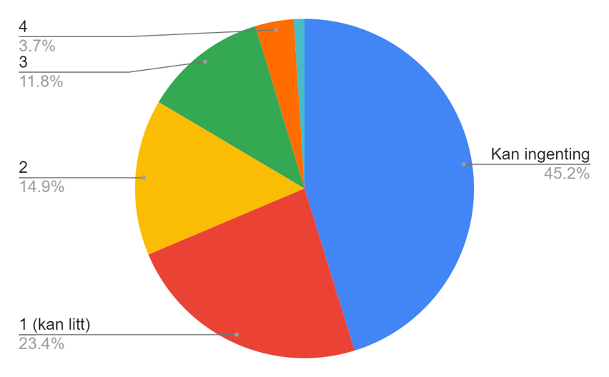
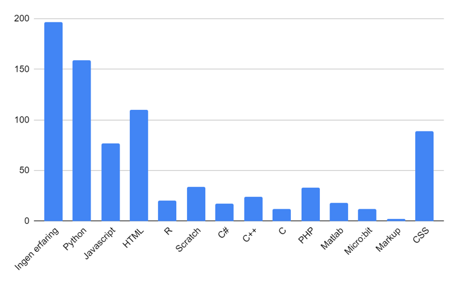

Forkunnskapstest i Programmering
Kartlegging av programmeringskunnskapene til nye studenter

Studenter starter studiet med 3 års programmeringserfaring
Høsten 2023 vil alle nye studenter ha hatt programmering på videregående i obligatoriske fag. Hva vil dette ha å si for vår undervisning?
Med kunnskapsløftet 2020 ble programmering en del av pensum for alle videregående elever ved studiespesialisering. Nå tre år senere møter vi disse studentene i høyere utdanning. Hva er det de allerede kan? Hva er kvaliteten på programmeringsundervisningen i videregånde? I hvor stor grad må vi tilpasse vår undervisning? Har vi studenter som rett og slett ikke trenger Introduksjon til programmering?
For å kunne besvare disse spørsmålene ønsker vi å opprette nasjonal forkunnskapstest i programmering. Siden 1984 har Norsk matematikkråd avholdt en forkunnskapstest for innkommende studenter for å kartlegge deres mattekunnskaper fra grunnskole og videregående. Denne informasjonen har veiledet undervisningen ved universiteter og høyskoler utgjennom årene. I lik stil vil vi opprette en test for innkommende informatikk- og informasjonsvitenskap-studenter.

Hva læres på grunnskole og videregående?
Algoritmisk tenkning og programmering er nå del av læreplanmålene fra 2. klasse til VG3.
- 2. trinn: Lage og følge regler og trinnvise instruksjoner i lek og spill
- 4. trinn: Lage algoritmer og uttrykke dem ved bruk av variabler, vilkår og løkker
- 5. trinn: Lage og programmere algoritmer med bruk av variabler, vilkår og løkker
- 8. trinn: Utforske hvordan algoritmer kan skapes, testes og forbedres ved hjelp av programmering
- 9. trinn: Simulere utfall i tilfeldige forsøk og beregne sannsynligheten for at noe skal inntreffe ved å bruke programmering
- 10. trinn: Utforske matematiske egenskaper og sammenhenger ved å bruke programmering
- 1T-matte: Formulere og løse problemer ved hjelp av algoritmisk tenking, ulike problemløsningsstrategier, digitale verktøy og programmering
- S2- og R2-matte: Utforske rekursive sammenhenger ved å bruke programmering og presentere egne framgangsmåter
Høsten 2022 finner vi programmeringsoppgaver i Python på eksamen i 1T- og R1-matte:


Mye av det de allerede har lært finner vi et stykke ut i semesteret i introduksjonskursene vi underviser. Vil vi måtte gjøre store endringer til våre læreplanmål?

Pilotprosjekt - Kartlegging ved Universitet i Bergen
Høsten 2022 utførte institutt for informatikk ved UiB kartlegging av programmeringskunnskaper hos innkommende studenter.
- Spørreundersøkelse om erfaring og selvrapportert kompetanse
- Kartleggingsprøve - Teste hva studentene faktisk kan
Resultatene (n=496) viser at 50.4% har noe form for erfaring med programmering, lært fra skole (gjennom valgfag) eller på eget initiativ. Studentene (n=436) ble bedt om å rangere sin programmeringsevne fra 1 (kan litt) til 5 (dyktig):
Studentene meldte erfaring i de følgende programmeringsspråkene:
Alle studentene ble invitert til å delta i en Python-prøve. Som insentiv ville de som besto prøven få godkjent 6 ukers kursarbeid. Av de 56 som deltok var det 23 som bestod.
Resultatene fra denne kartleggingen viser at noen studenter har grunnleggende ferdigheter, men studentbasen i sin helhet ikke har mye kompetanse. Men, dette er et kull som ikke har hatt programmering som obligatorisk pensum. I 2023 forventes en høyere evne blant studentene.
Les mer
Utfyllende informasjon om bakgrunn, hensikt og hva som har blitt gjort så langt:- Hva er det av programmering elevene lærer på grunnskole og videregående?
- Kartleggingsresultater ved universitetet i Bergen høst 2022
- Forkunnskapstest i matematikk, hvordan har de gjort det?
- Kommisjon for nasjonal forkunnskapstest i programmering
Deltagelse
Ønsker du og din instutisjon å delta i dette prosjektet? Vi inviterer til Nasjonal Kommisjon for Forkunnskapstest i Programmering
Meld din interesse her: